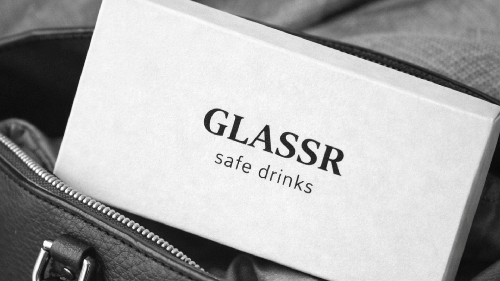

GLASSR, An E-commerce Concept
A fully built Shopify website and growth framework designed to reach SEK 100,000 in sales without a marketing budget.
- Identified market gap and target audience
- Led the STDC framework and customer journey logic
- Drove the B2B direction strategically forward
- Contributed to positioning, tone of voice, and premium expression
- Contributed to structure, CTA flow, and conversion order

Challenge
The assignment was to build a functioning e-commerce store in Shopify and create a growth plan that could generate SEK 100,000 in sales without a marketing budget.
This required a well-developed business model, clear positioning, and a structured customer journey from first exposure to purchase.
Insight
Women's safety is currently a clear social issue in Sweden. Safety in public spaces is widely discussed, and reports of drink spiking are recurring. There is growing awareness, and growing concern.
At the same time, many safety products are communicated through fear. We saw an opportunity to position glassr differently.
The Idea
glassr is a discreet drug test for drinks, packaged as modern control rather than protection from danger.
Premium in expression. Discreet in function. Integrated into the lifestyle. The goal was to create a safety product that does not signal paranoia, but smart preparation.
Strategy
The strategic core is B2B. By being present in bars and clubs, the product gains legitimacy in the right environment. It becomes preventive rather than reactive, while venues take a clear position and show responsibility toward their guests.
The B2C track through e-commerce makes it possible to purchase directly before a night out. The combination of physical presence and digital conversion strengthens the business model and makes it more scalable over time.
Shopify & Structure
We built a fully functioning website in Shopify. The site was designed with a focus on a premium feeling and clear conversion logic.
The homepage creates context and positioning. The product page is more informative and rational. The About page builds a relationship and ends with a clear CTA. The order of information and call-to-action placement were structured strategically to guide the user through the decision process without unnecessary friction.
Growth – STDC
We used STDC as the overall model for the full customer journey, from first exposure to purchase and beyond. The framework ensured that every step was connected and that we thought in terms of the full journey, not isolated activities.
B2B & Digital Exposure
Evaluation on Site
Purchase
Retention
Outcome
The project resulted in a fully built Shopify website, clear positioning, and a structured business model combining B2B and B2C.
glassr shows how a current social issue can be turned into a thoughtful e-commerce solution with a clear customer journey, premium expression, and scalable strategy.